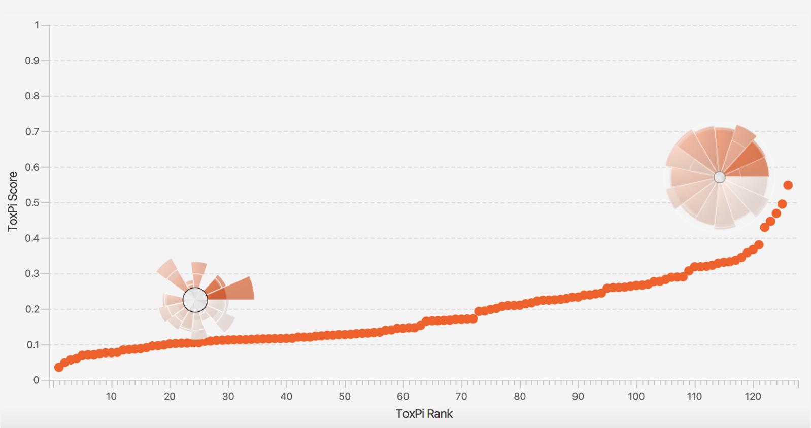

The scenario box requests that the user inputs their environmental health scenario, which should include the city and state they inhabit. Other topics to inform chemical generation include, but are not limited to, occupation, background, gender, and class.
For example, a proper text entry might look like this: I am a white man who works on a sweet potato farm in Dunn, North Carolina. Please give me the five most important specific chemicals for me to know about.
More information and questions may be requested from the chatbot within this scenario box, but the main purpose of it is to identify chemicals of risk.
Click “Send” to process the response and transfer it through the RAG pipeline onto the next step.
AI-Identified Chemicals
With a proper risk scenario inputted, the scenario will be processed and returned as a list of five identified chemicals that have elevated precedence in the user’s scenario.
Once the chemicals have been identified, click “Submit” to create a ToxPi file with bioactivity data for those chemicals.
Output
Click “Download” to get a personal ToxPi File to be used on the ToxPi Graphical User Interface. The link to the interface (https://toxpi.org/) is included on the HTML page for quick reference.

Visual output simplification of ToxPi. A larger pie has a larger comparative risk.